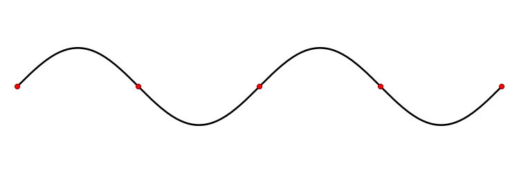
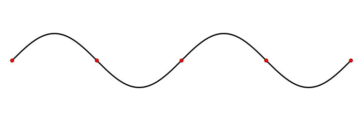

La meccanica quantistica è la teoria fisica che descrive il comportamento della materia, della radiazione e le reciproche interazioni, con particolare riguardo ai fenomeni caratteristici della scala di lunghezza o di energia atomica e subatomica[2], dove le precedenti teorie classiche risultano inadeguate.
Come caratteristica fondamentale, la meccanica quantistica descrive la radiazione[3] e la materia[4] sia come fenomeni ondulatori sia come entità particellari, al contrario della meccanica classica, che descrive la luce solamente come un'onda e, ad esempio, l'elettrone solo come una particella. Questa inaspettata e controintuitiva proprietà della realtà fisica, chiamata dualismo onda-particella[5], è la principale ragione del fallimento delle teorie sviluppate fino al XIX secolo nella descrizione degli atomi e delle molecole. La relazione tra natura ondulatoria e corpuscolare è enunciata nel principio di complementarità e formalizzata nel principio di indeterminazione di Heisenberg[6].
 
